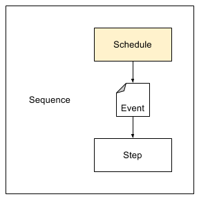

The Schedule allows you to trigger a sequence periodically. It emits an event whenever a discrete time period has occurred.
To adjust a schedule, click the Config link next to a Schedule step.
You can select one or more hourly time intervals that define when the schedule should fire.
Run Times are assumed to be specified in GMT with no reference to the org or user time zone.
